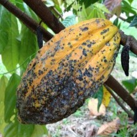
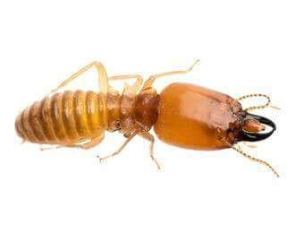
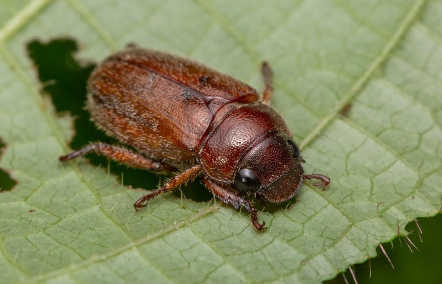
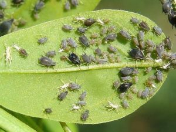
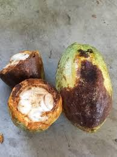
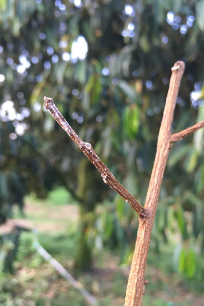
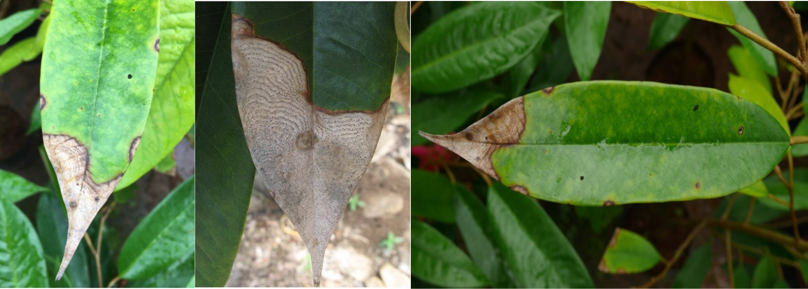

มีลักษณะคล้ายยุงแต่โตกว่า มีหนวดยาวมาก 2 เส้น ลำตัวเขียวสลับดำ มวนจะดูดกินน้ำเลี้ยงจากยอดอ่อนและผล ทำให้ผิวผลเกิดจุดตกกระเล็กๆสีดำทั่วทั้งผล ซึ่งอาจนำไปสู่การติดเชื้อราซ้ำเติมจนผลเน่าเสียหายในที่สุด

มักเข้าทำลายต้นโกโก้ที่ยังเล็ก โดยกัดกินบริเวณโคนต้นและลึกลงไปในดินประมาณ 2-3 เซนติเมตร ส่งผลให้ต้นโกโก้ชะงักการเจริญเติบโต

ด้วงชนิดนี้จะเข้ากัดกินใบอ่อนของโกโก้ โดยเฉพาะในช่วงเวลากลางคืน

จะดูดกินน้ำเลี้ยงบริเวณยอดอ่อนของโกโก้ มักระบาดหนักในช่วงฤดูฝนที่มีความชื้นในอากาศสูง

เกิดจากเชื้อรา *Phytophthora Palmivora* เริ่มจากจุดใสเล็กๆ บนผิวผล แล้วเปลี่ยนเป็นสีน้ำตาลดำอย่างรวดเร็วลามทั่วทั้งผล แผลจะมีลักษณะฉ่ำน้ำ

เกิดจากเชื้อรา *Oncobasidium theobromae* อาการเริ่มจากใบเหลืองซีดเห็นเส้นกลางใบชัด มีจุดเขียวกระจาย และกิ่งจะบวมปูดมีรอยเล็กๆ ตามเปลือกบริเวณที่ใบหลุดไป

โรคไหม้จะเห็นเส้นใยสีขาวสานกันปกคลุมใบจนแห้งตาย ส่วนแอนแทรคโนสจะทำให้ขอบใบและปลายใบอ่อนไหม้จนใบโค้งงอ หรือผลอ่อนเน่าดำ
